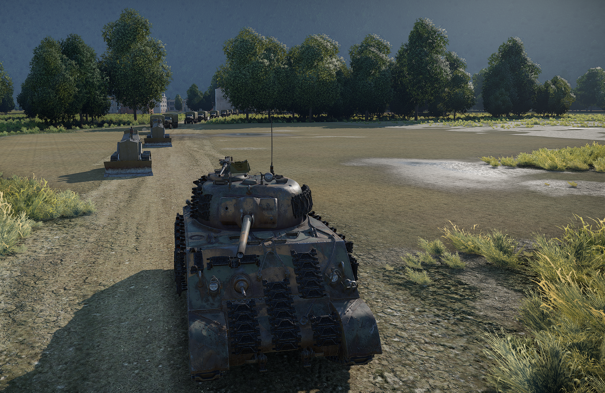

Nombre de joueurs recommandé
Minimum 4 joueurs (6 à 8 joueurs).
Ce nombre peut être ajusté par vos soins.
Véhicules Escorte
FR France
- Pour que la mission soit intéressante les véhicules autorisés ne doivent pas dépasser le BR 4.0
L'équipe Escorte doit rester à proximité du convoi pour le protéger jusqu'à l'arrivée.
Images
-

-

-

Création de la map
- Cette map personalisée à été crée pour la communautée, grâce à vous, alors n'hésité pas et proposés des idées pour de futurs events dans le channel "💡vos-idées" !